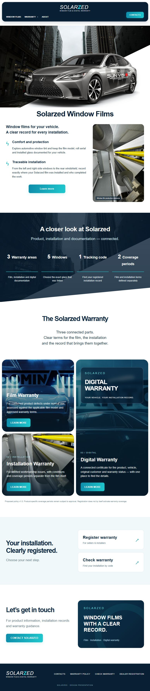
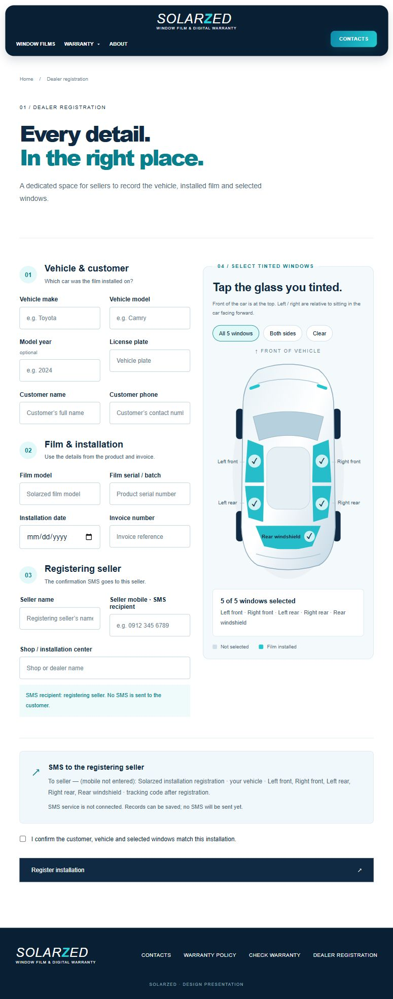
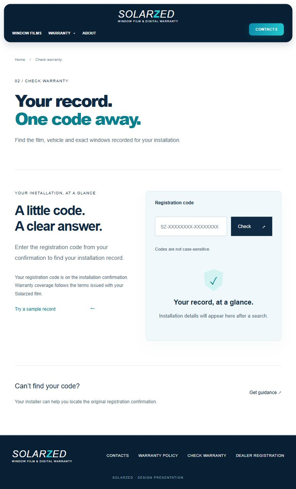
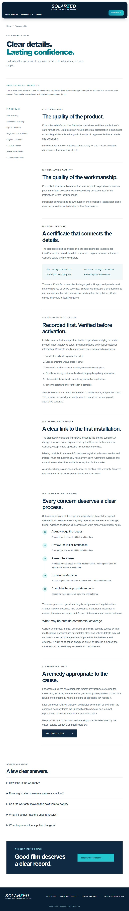
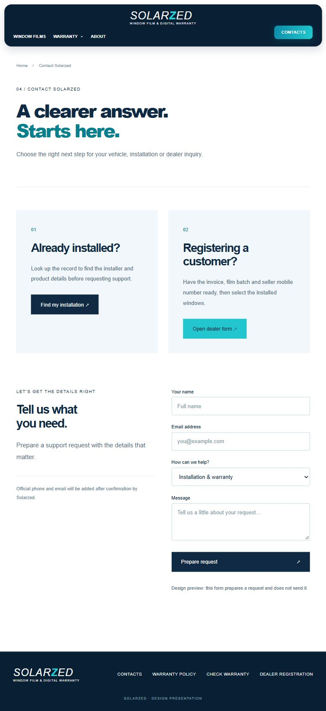
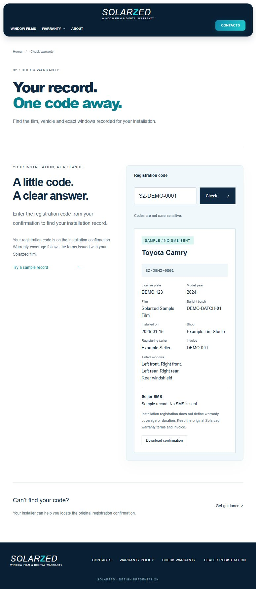

طرح پیشنهادی سایت Solarzed
پنج صفحهٔ اصلی و یک نمونهٔ نتیجهٔ استعلام؛ برای دریافت تصویر با اندازهٔ اصلی روی آن کلیک کنید.
۱. صفحهٔ اصلی
معرفی برند Solarzed با رنگبندی سفید، فیروزهای و سرمهای، تصویر خودرو و دسترسی مستقیم به ثبت و استعلام گارانتی. بخشهای بعدی، خدمات سایت و مراحل ثبت نصب را معرفی میکنند.

۲. ثبت گارانتی توسط فروشنده
فرم ثبت مشخصات خودرو، مشتری، فیلم شیشهدودی و فروشندهٔ ثبتکننده. فروشنده میتواند شیشههای جلو و عقبِ چپ و راست و شیشهٔ بزرگ عقب را روی نمای خودرو انتخاب کند؛ خلاصهٔ انتخابها و بخش پیامک فروشنده در پایین فرم نمایش داده میشوند.

۳. استعلام گارانتی
صفحهای ساده برای یافتن سابقهٔ نصب با کد پیگیری. کاربر کد دریافتی را وارد میکند و میتواند مشخصات نصب ثبتشده را مشاهده کند.

۴. راهنمای گارانتی
معرفی مدارک لازم، نحوهٔ پیگیری خدمات و پاسخ به پرسشهای رایج. متن نهایی مدت، پوشش و استثناهای گارانتی پس از تأیید Solarzed در این بخش قرار میگیرد.

۵. تماس و پشتیبانی
مسیرهای جداگانه برای مشتریان و فروشندگان، همراه با فرم پیشنهادی درخواست پشتیبانی. اطلاعات تماس رسمی پس از اعلام کارفرما جایگزین میشود؛ فرم تماس در نسخهٔ فعلی نمایشی است.

۶. نمونهٔ نتیجهٔ استعلام
نمونهٔ نمایش اطلاعات خودرو، مدل فیلم، تاریخ نصب، فروشنده و شیشههای ثبتشده، همراه با امکان دریافت تأییدیه. اطلاعات داخل این تصویر آزمایشی است و مربوط به مشتری واقعی نیست.

پیامک و اطلاعات تماس رسمی پس از تکمیل تنظیمات فعال میشوند. عکس خودرو فعلاً نمونه است.